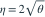
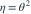
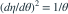
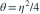
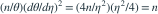

容量 n 的独立样本来自  。下面哪一个新参数 ，能使样本关于 的 Fisher 信息恒等于 n？
。下面哪一个新参数 ，能使样本关于 的 Fisher 信息恒等于 n？
。下面哪一个新参数 ，能使样本关于 的 Fisher 信息恒等于 n？- A

- B
- C
- D

我已思考，展开答案与解析
正确答案：A
- 原参数的信息为
 。要求 ，则需
。要求 ，则需 
。 - 选择正导数并积分，得到 ；取 C=0 即为选项中的形式。
- 验证：

，因此
。
易错提醒平方根变换前的倍数会改变恒定信息的具体数值。
南审 813 · 2026 · 二·2(1)(b)，PDF第1页
从大题拆分考点并重新编写选项；数值或设问有调整。
查看参考来源